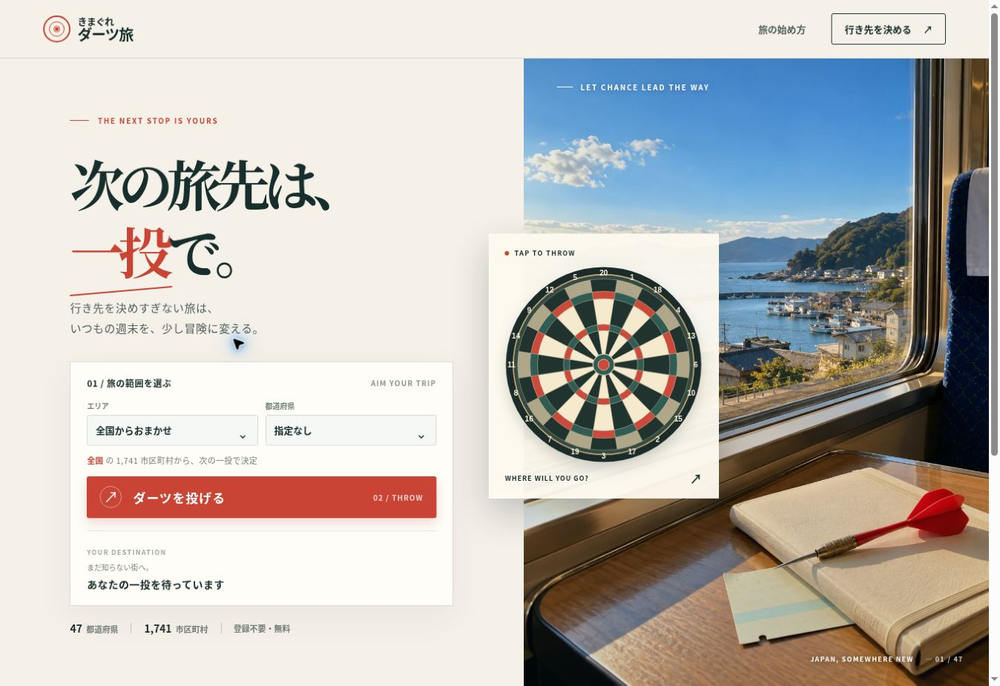
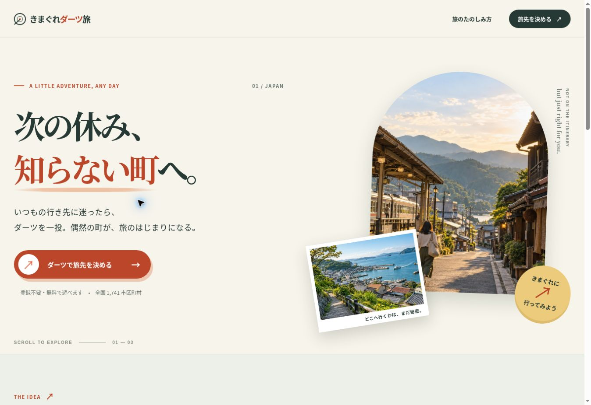
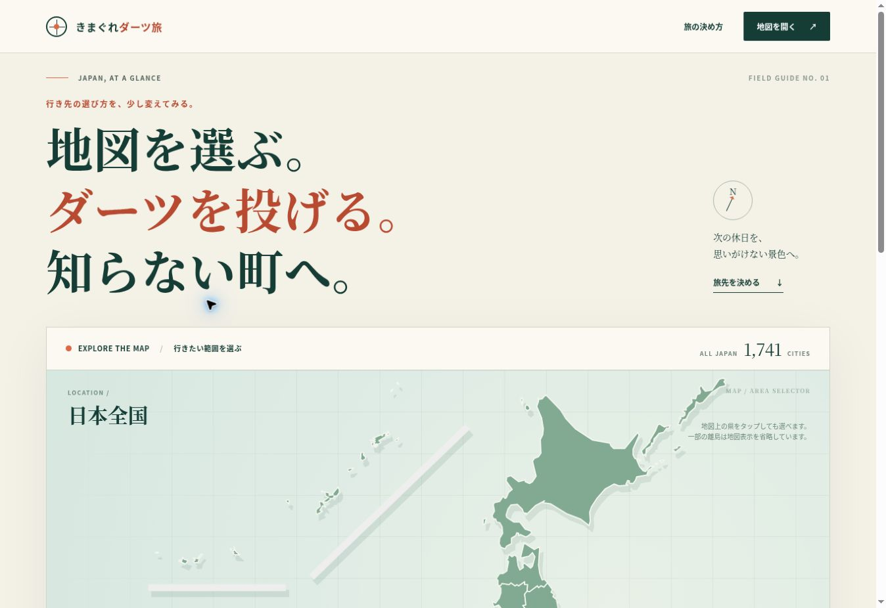
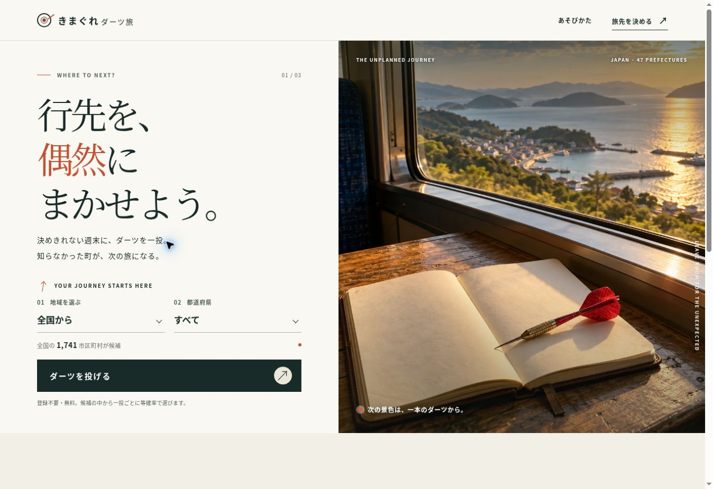

LANDING PAGE COMPETITION / 2026
旅のはじまりを、
4つの視点から。
女性設定2人・男性設定2人のAIデザイナー役が、同じ旅先データとダーツの体験を、異なる構成で提案しました。各案を開き、一投まで試せます。
比較の軸：旅に出たくなるか ／ ダーツだと伝わるか ／ 一投まで迷わないか

01旅先を、いま決める。
写真と投擲を同じ画面に置く、すぐ使えるプレミアムな旅行サイト案。
案を開いて投げる

02偶然を、もっと楽しく。
旅雑誌の発見とアプリの軽快さを合わせた、明るい探索案。
案を開いて投げる

03地図から、知らない町へ。
選ぶ範囲を地図で捉え、着弾を地理的な旅の入口にする案。
案を開いて投げる

04一投が、旅のスイッチ。
強い余白と写真、触りたくなるダーツで構成したキャンペーン案。
案を開いて投げる
見比べるポイント
4案とも全国1,741市区町村を使った試作品です。地域・都道府県を選んでダーツを投げ、町の結果とGoogleマップへの導線まで触れられます。元の公開LPは保持しています。コンペ案を比較してから採用案を決められます。